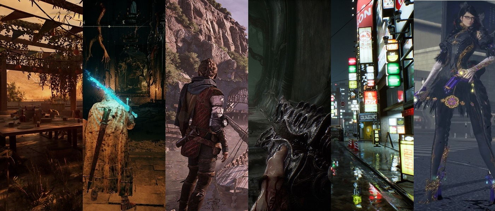
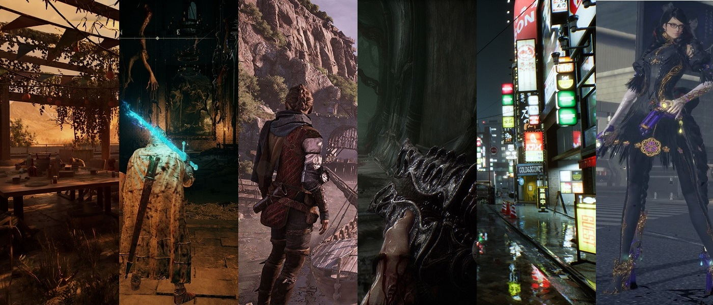

Se anuncia el lanzamiento de "Juego X"
El desarrollador Y ha anunciado el lanzamiento de su último juego, "Juego X", para finales de este año. El juego promete ser uno de los más emocionantes del año.
Leer más 


El desarrollador Y ha anunciado el lanzamiento de su último juego, "Juego X", para finales de este año. El juego promete ser uno de los más emocionantes del año.
Leer másEl juego "Juego Z" ha alcanzado un nuevo hito al vender más de 10 millones de copias en todo el mundo. Los fans están entusiasmados con el éxito del juego y esperan ansiosamente una secuela.
Leer más"Juego A" es un juego de acción emocionante que pone a los jugadores en el papel de un héroe que lucha contra el mal en un mundo postapocalíptico. La jugabilidad es suave y la historia es emocionante, lo que lo convierte en una excelente adición a cualquier colección de juegos de acción.
Leer más"Juego B" es un juego de aventuras en el que los jugadores se sumergen en un mundo mágico lleno de personajes interesantes y desafíos emocionantes. La historia es rica y compleja, y la jugabilidad es suave y satisfactoria. En general, "Juego B" es un juego que vale la pena jugar.
Leer más